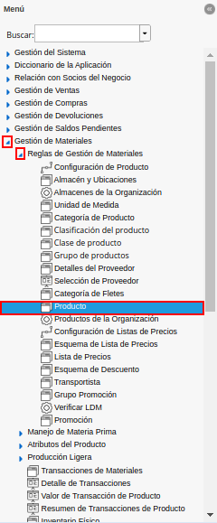

Proceso de Reabastecimiento
El proceso de reabastecimiento permite generar los respectivos documentos de movimiento de material, requisición, orden de compra, o de distribución, en estado “Borrador”. El comportamiento del proceso consta en el tipo de reabastecimiento seleccionado en la configuración del producto. ADempiere permite utilizar los siguientes tipos de reabastecimiento:
Mantener El Nivel Máximo
Manual
Personalizado
Reordenar por debajo del nivel mínimo
Plan de reabastecimiento calculado
Para simular el proceso de reabastecimiento, se presentan los siguientes datos como ejemplo:
Producto
Almacén Fuente
Tipo de Reabastecimiento
UM
Nivel Mínimo
Nivel Máximo
Cantidad en Existencia
Cantidad a Ordenar
Socio del Negocio
DOIS-000001_Estandar
Mantener El Nivel Máximo
Unidad
20
40
60
0
Estándar
ACAP-000003_Cable de Red
Mantener El Nivel Máximo
Unidad
20
40
41
0
Estándar_Estándar
Mantener El Nivel Máximo
Unidad
20
40
35
5
DOIS-000005_Guante
Mantener El Nivel Máximo
Unidad
20
40
36
4
INAR-000001_Hoja tamaño carta
Reordenar por debajo del nivel mínimo
Unidad
20
40
20
0
INAR-000002_Bolígrafo
Reordenar por debajo del nivel mínimo
Unidad
20
40
5
15
INAR-000003_Cuaderno
Reordenar por debajo del nivel mínimo
Unidad
20
40
25
0
INAR-000004_Marcador
Reordenar por debajo del nivel mínimo
Unidad
20
40
7
13
Para ejecutar correctamente el proceso de reabastecimiento de almacén, es necesario que se realicen los procedimientos que a continuación se explican.
Configuración Esencial
Ubique y seleccione en el menú de ADempiere, la carpeta “Gestión de Materiales”, luego seleccione la carpeta “Reglas de Gestión de Materiales”, por último seleccione la ventana “Producto”.

Menú de ADempiere
Podrá visualizar la ventana “Producto”, con todos los registros de los productos en ADempiere, en la cual debe ubicar el registro del producto involucrado en el proceso de reabastecimiento, para realizar la configuración esencial del mismo.
Imagen 2. Producto a Configurar

Seleccione la pestaña “Reabastecer”, ubicada del lado izquierdo de la ventana “Producto” y realice el procedimiento explicado en el proceso Pestaña Reabastecer, del documento Registro de Producto, elaborado por ERPyA. Para el ejemplo del presente documento, se tienen las siguientes restricciones:
“Almacén”: Comercialización
“Tipo de Reabastecimiento”: Mantener El Nivel Máximo ó Reordenar por debajo del nivel mínimo
“Nivel Mínimo”: 20
“Nivel Máximo”: 40
Imagen 3. Configuración del Producto

Ejecución del Proceso
Ubique y seleccione en el menú de ADempiere, la carpeta “Gestión de Materiales”, luego seleccione la ventana de búsqueda inteligente “Reabastecimiento de Almacén”.
Imagen 4. Menú Reabastecimiento de Almacén

Podrá visualizar la ventana “Reabastecimiento de Almacén”, con diferentes campos que permiten filtrar la información para generar el documento requerido.
Imagen 5. Ventana Reabastecimiento de Almacén

Seleccione en el campo “Producto”, el producto por el cual requiere filtrar la información.
Imagen 6. Campo Producto de la Ventana Reabastecimiento de Almacén

Seleccione en el campo “Categoría del Producto”, la categoría del producto por el cual requiere filtrar la información.
Imagen 7. Campo Categoría del Producto de la Ventana Reabastecimiento de Almacén

Seleccione en el campo “Clase de Producto”, la clase del producto por la cual requiere filtrar la información.
Imagen 8. Campo Clase de Producto de la Ventana Reabastecimiento de Almacén

Seleccione en el campo “Clasificación de Producto”, la clasificación del producto por el cual requiere filtrar la información.
Imagen 9. Campo Clasificación de Producto de la Ventana Reabastecimiento de Almacén

Seleccione en el campo “Grupo de Producto”, el grupo de producto por el cual requiere filtrar la información.
Imagen 10. Campo Grupo de Producto de la Ventana Reabastecimiento de Almacén

Seleccione en el campo “Almacén Fuente”, el almacén fuente por el cual requiere filtrar la información.
Imagen 11. Campo Almacén Fuente de la Ventana Reabastecimiento de Almacén

Seleccione en el campo “Tipo de Reabastecimiento”, el tipo de reabastecimiento por el cual requiere filtrar la información.
Imagen 12. Campo Tipo de Reabastecimiento de la Ventana Reabastecimiento de Almacén

Seleccione en el campo “Almacén”, el almacén por el cual requiere filtrar la información.
Imagen 13. Campo Almacén de la Ventana Reabastecimiento de Almacén

Seleccione la opción “Comenzar Búsqueda”, para filtar la información en base a lo seleccionado en los campos anteriormente explicados.
Imagen 14. Opción Comenzar Búsqueda de la Ventana Reabastecimiento de Almacén

Podrá visualizar los diferentes registros de configuración de reabastecimiento que contienen los productos.
Imagen 15. Listado de Registro de Configuración de Productos
Seleccione el registro del producto que requiere reabastecer.
Imagen 16. Selección de Producto a Reabastecer
Al seleccionar el registro del produto, se habilita el campo de la columna “Cantidad a Ordenar”, con el valor que se requiere para cumplir con la cantidad de productos establecida en la configuración del mismo.
Imagen 17. Campo Cantidad a Ordenar


Seleccione en el campo “Crear”, el documento que requiere crear para reabastecer el producto en el almacén seleccionado.
Imagen 18. Campo Crear de la Ventana Reabastecimiento de Almacén
Note
Cuando se requiere generar el documento “Orden de Compra”, es obligatorio seleccionar el socio del negocio proveedor en la columna “Socio del Negocio” de la ventana “Reabastecimiento de Almacén”.

Seleccione en el campo “Tipo de Documento”, el tipo de documento con el que requiere que se genere el documento en estado “Borrador”.
Imagen 19. Campo Tipo de Documento de la Ventana Reabastecimiento de Almacén

Seleccione la opción “OK”, para ejecutar el proceso “Reabastecimiento de Almacén”.
Imagen 20. Opción OK de la Ventana Reabastecimiento de Almacén

Podrá visualizar en la parte inferior izquierda de la ventana, el número de identificación del documento generado.
Imagen 21. Número de Documento Generado en la Ventana Reabastecimiento de Almacén

Resultado Obtenido
Si en el campo “Crear”, de la ventana “Reabastecimiento de Almacén”, es seleccionada la opción “Mover Inventario”. La consulta del documento generado se realiza en la ventana “Movimiento de Inventario”, con ayuda del número de documento generado al ejecutar el proceso.
Imagen 20. Consulta de Mover Inventario

Si en el campo “Crear”, de la ventana “Reabastecimiento de Almacén”, es seleccionada la opción “Orden de Compra”. La consulta del documento generado se realiza en la ventana “Órdenes de Compra”, con ayuda del número de documento generado al ejecutar el proceso.
Imagen 21. Consulta de Orden de Compra

Si en el campo “Crear”, de la ventana “Reabastecimiento de Almacén”, es seleccionada la opción “Orden de Distribución”. La consulta del documento generado se realiza en la ventana “Orden de Distribución”, con ayuda del número de documento generado al ejecutar el proceso.
Imagen 22. Consulta de Orden de Distribución

Si en el campo “Crear”, de la ventana “Reabastecimiento de Almacén”, es seleccionada la opción “Requisición”. La consulta del documento generado se realiza en la ventana “Requisición”, con ayuda del número de documento generado al ejecutar el proceso.
Imagen 23. Consulta de Requisición